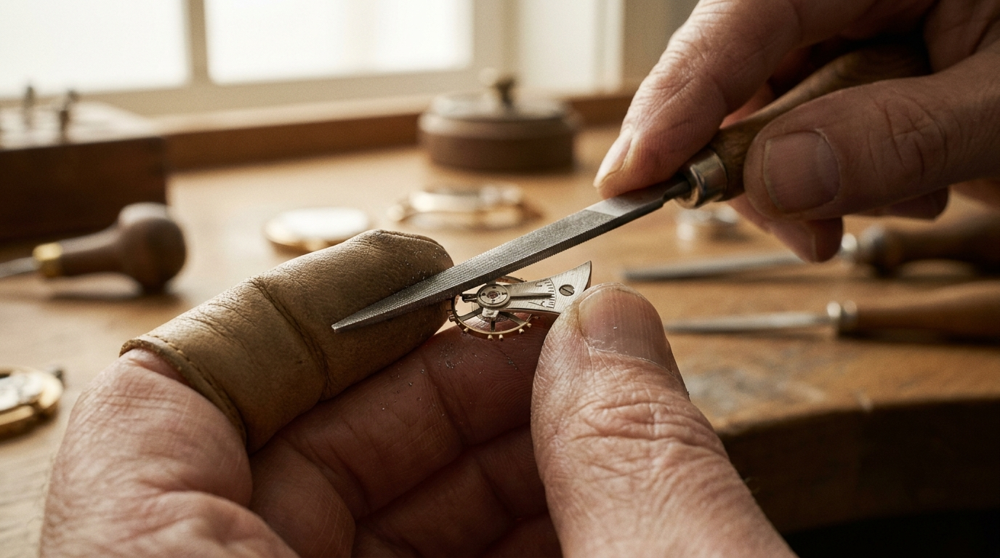
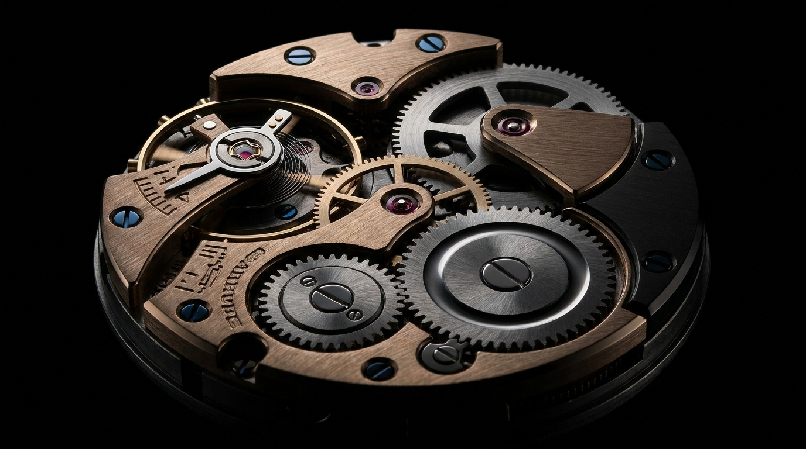
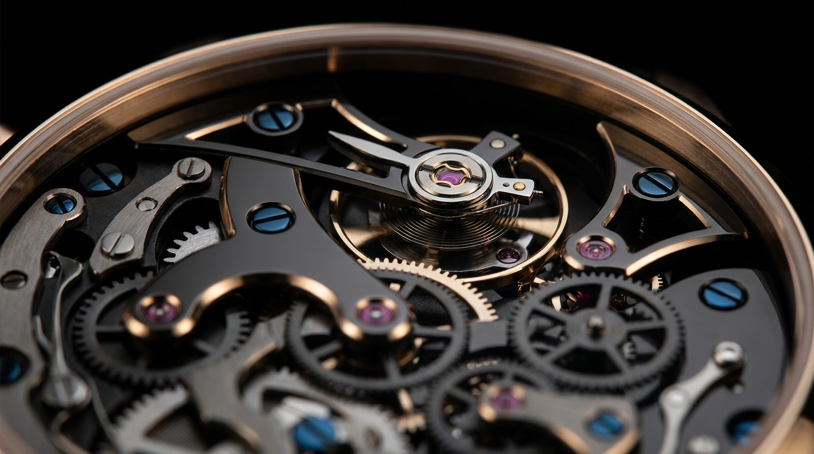

Made slowly, on purpose.
From the first laid-out part to the last stitch of the strap — six stages, all done by hand.
There is no shortcut to a bevel that catches the light just so. We polish, inspect, and begin again until the surface is as quiet as the dial.
The parts
Every component is laid out and inspected before a single screw is turned. Hundreds of tiny pieces, each with a place.
Case finishing
Brushed flanks, polished chamfers and crisp transitions between them — each surface is worked on its own wheel, by hand.
Hand finishing
Bridges and wheels are filed, angled and polished under magnification. This is the detail you only notice when you look closely.
Movement assembly
Jewels seated, screws blued, bridges fitted. The movement comes together one layer at a time.
Regulation
The balance is adjusted until it beats true, then tested in several positions before it earns a case.
Strap & fit
Leather and rubber are cut, stitched and fitted so the watch sits low and flat against the wrist.





Scroll to take it apart.
Crystal and dial
The top layer lifts away to reveal the movement underneath.
Crown and pushers
Every control is machined, sealed and tested separately.
Everything in its place
Each wheel and screw is laid out — and goes back exactly where it was.
The heartbeat, magnified.
What it is made of.
Blackened steel
Stainless steel with a matte charcoal finish — tough, calm and low-glare.
Rose-gold accents
Warm flanks, batons and hands that pick up light against the dark case.
Sapphire crystal
Scratch-resistant, with an anti-reflective coating on both sides.
Leather & rubber
Calf, alligator-grain and perforated rubber — stitched and finished by hand.